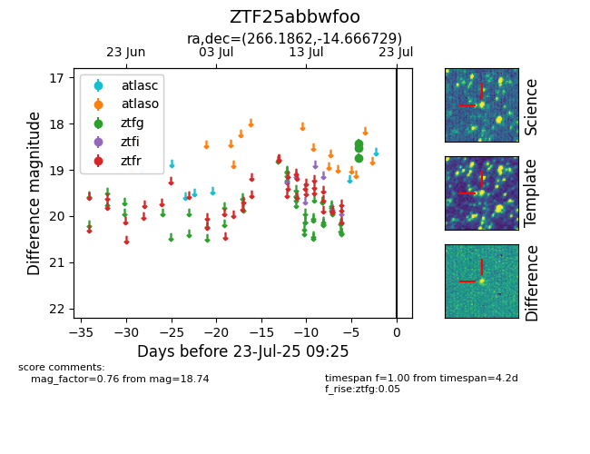

Target ZTF25abbwfoo at 2025-07-23 11:48, see:
FINK: fink-portal.org/ZTF25abbwfoo
Lasair: lasair-ztf.lsst.ac.uk/objects/ZTF25abbwfoo
ALeRCE: alerce.online/object/ZTF25abbwfoo
alt names
ZTF25abbwfoo (ztf,fink)
coordinates:
equatorial (ra, dec) = (266.1862,-14.66673)
galactic (l, b) = (12.1389,+7.56071)
photometry
last ztfg=18.74
3 ztfg detections
